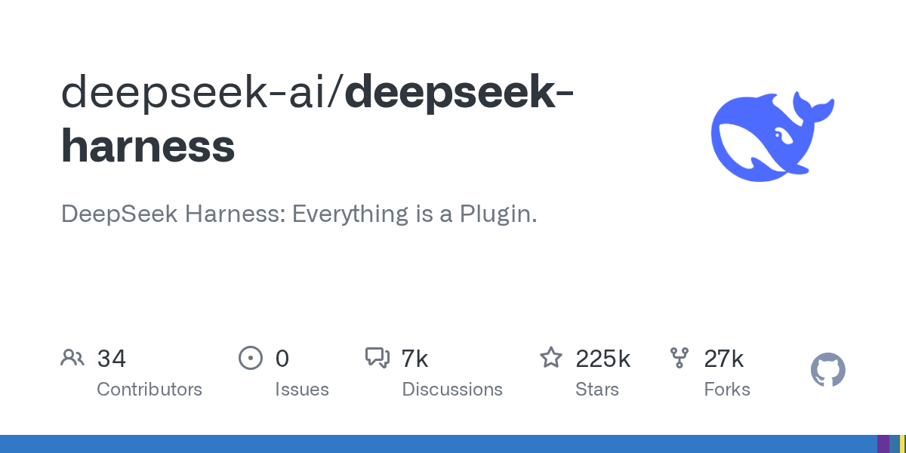

02 GitHub
deepseek-ai/deepseek-harness
플러그인만 바꿔 에이전트를 바꾸는 틀
★ 225,344이번 주 +8,016TypeScriptMIT 사내 사용 가능최근 활동 09.15테스트 없음예제 없음AGENTS.md 있음

에이전트 도구는 한 번 붙이면 구조를 바꾸기 어렵다. DeepSeek Harness는 처음부터 기능을 플러그인으로 나누는 방식을 앞세웠다. 저장소 설명도 '모든 것이 플러그인'이라는 문장으로 시작한다. 다만 아직 정식판이 아니어서 실험용 성격이 강하다.
무엇을 하는 물건인가
DeepSeek Harness는 플러그인 중심으로 에이전트를 실행하는 오픈소스 틀이다. 필요한 기능을 통째로 고정하지 않고, 부품처럼 붙여 조합하는 방식에 가깝다. 웹 UI를 띄워 로컬에서 바로 시험할 수 있다. 사내 업무 자동화에 필요한 도구 상자를 먼저 만들고, 그 안에 필요한 도구만 채우는 느낌이다.
스펙과 도입 조건
- TypeScript로 만들었다.
- Node.js 설치가 필요하다.
- npm으로 바로 실행할 수 있다.
- 소스에서 실행할 때는 pnpm 빌드가 필요하다.
- 기본 웹 UI는 로컬 주소에서 열린다.
- SSH 환경에서는 로컬로 열린 주소 대신 호스트 URL만 출력한다.
- MIT 라이선스를 쓴다.
- 정식 릴리스는 아직 없다.
- 개발자 프리뷰 단계이며 호환성을 깨는 변경이 있을 수 있다고 밝혔다.
이럴 때 쓰면 좋다
- 고객 문의 분류나 규정 문서 탐색처럼 기능 조합이 자주 바뀌는 내부 에이전트 실험을 소규모로 시작할 때 맞다.
- 보안 검토 전 단계에서 외부 서비스 연결 없이 로컬 웹 UI만 띄워 구조를 살펴보려는 팀에 어울린다.
- 여러 부서가 각자 만든 확장 기능을 플러그인 형태로 묶어 공통 실행 틀을 시험하려는 상황에 쓸 수 있다.
핵심 기능
- 기능을 플러그인 단위로 붙이는 구조를 쓴다.
- npm 실행만으로 로컬 웹 UI를 띄울 수 있다.
- 플러그인 저장소에 dsh-plugin 주제를 붙여 찾기 쉽게 하도록 안내한다.
왜 지금 주목받나
이 저장소는 에이전트를 하나의 완성품으로 내놓기보다, 기능을 플러그인으로 나눠 조합하게 만든다. 기업 입장에서는 웹 검색, 문서 검색, 사내 시스템 연결 같은 기능을 따로 바꿔 끼우기 쉬운 구조다. 관심을 받는 이유는 이 유연성에 있다. 다만 개발자 프리뷰 단계라 도입 전에 호환성 변화와 안전 공지를 함께 검토해야 한다.
사내 도입 체크
- 외부 API 키 필요 여부는 본문에 없다. 확인 필요하다.
- 기본 실행은 로컬 웹 UI다. 데이터 반출 범위는 연결하는 플러그인에 따라 달라져 확인이 필요하다.
- 유지보수 주체는 DeepSeek AI 조직이다.
- 상용 에이전트 플랫폼이 대체할 수 있는 영역이 있다. 다만 이 저장소는 플러그인 구조 자체를 시험하려는 목적에 더 맞다.
주요 용어
하네스(harness): 여러 기능을 묶어 에이전트를 실행·관리하는 틀 플러그인(plugin): 기본 프로그램에 기능을 붙이는 확장 모듈 웹 UI(Web UI): 브라우저에서 쓰는 사용자 화면 Node.js: 자바스크립트 실행 환경 개발자 프리뷰(developer preview): 정식 전 단계로 호환성 변경이 잦은 공개 버전
원문 정보
제목: deepseek-ai/deepseek-harness
최근 활동: 2026.09.15